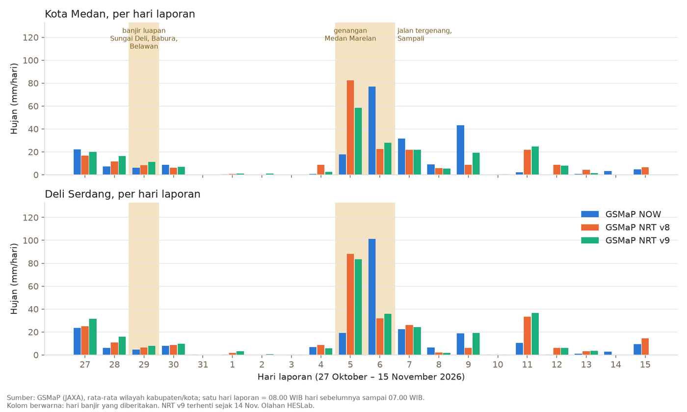
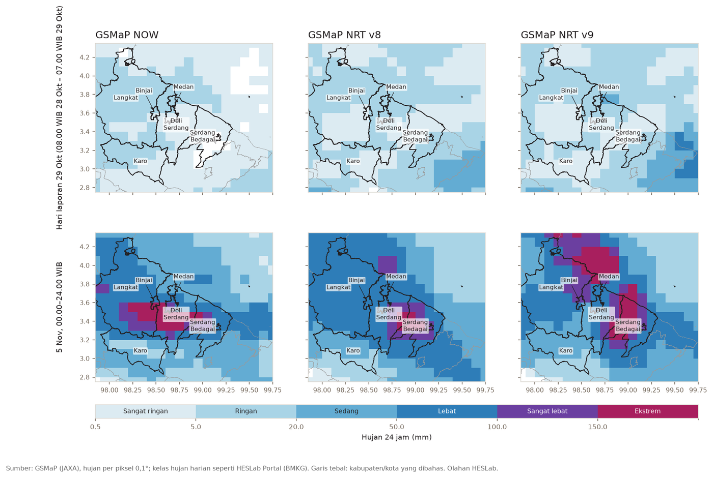

Daftar isi
Dalam delapan hari, Medan dan sekitarnya dua kali kebanjiran. Malam 28 Oktober 2026, Sungai Deli, Babura, dan Belawan meluap dan merendam ribuan rumah. Pagi 5 November, hujan deras menggenangi Medan Marelan, lalu pagi 6 November sungai-sungai kembali naik dan banyak jalan kota tergenang. Tulisan ini membaca kedua kejadian itu dengan tiga produk satelit GSMaP yang terbit cepat (NOW, NRT v8, dan NRT v9). Hasilnya kontras: banjir 5–6 November didahului hujan lebat yang tercatat jelas oleh ketiga produk, sedangkan hujan penyebab banjir 28 Oktober yang lebih parah hampir tidak terlihat sama sekali.

Apa yang tercatat di lapangan
28–29 Oktober: banjir luapan sungai
Menurut pemberitaan, hujan turun di Medan sejak Rabu sore atau malam, 28 Oktober, sampai dini hari Kamis. Warga Kampung Aur mendapati air Sungai Deli naik sekitar pukul 22.00 dan masuk permukiman sekitar pukul 23.00 (Kompas). Di Sei Mati, air mulai naik sekitar pukul 01.00 dan mencapai lebih dari satu meter, setinggi leher orang dewasa (detikSumut).
BPBD Kota Medan mencatat 2.200 rumah, 2.405 KK, dan 7.930 jiwa terdampak di Medan Johor, Medan Maimun, Medan Selayang, Medan Helvetia, dan Medan Tuntungan. Sebanyak 468 orang mengungsi dan 106 orang dievakuasi dari rumah (Kompas). Tinggi air umumnya 1 sampai 1,5 meter. Kepala BPBD Medan menyebut sungai meluap bukan hanya karena hujan di kota, tetapi juga karena hujan di pegunungan (Sumut Pos). Warga menyebut Sibolangit dan Berastagi, dan seorang warga Sei Mati menduga banjir kiriman karena hujan di tempatnya tidak terlalu deras.
Malam yang sama, banjir juga melanda Kota Binjai (tiga kecamatan), Deli Serdang (antara lain Sunggal, Deli Tua, Tanjung Morawa, dan Hamparan Perak), dan Langkat (694 jiwa terdampak) (Metro Daily).
5–6 November: genangan setelah hujan pagi
Kamis 5 November, banjir mulai menggenangi Medan Marelan sekitar pukul 04.50 WIB akibat hujan deras di Medan dan sekitarnya. Pukul 15.00 air belum surut dan masih hampir setinggi lutut orang dewasa (mistar.id).
Jumat pagi 6 November, BPBD Medan melaporkan Sungai Deli, Babura, Sikambing, Belawan, dan Denai naik, dan banyak ruas jalan tergenang, tetapi belum ada warga yang mengungsi (Sumut Pos). Di Desa Sampali, Percut Sei Tuan, Deli Serdang, air naik sejak sekitar pukul 06.00 setelah hujan deras dan masuk ke sejumlah rumah, setinggi betis (detikSumut).
Apa kata satelit
Hujan dari tiga produk GSMaP dirata-ratakan per kabupaten/kota untuk Kota Medan dan lima wilayah di sekitarnya. Satu hari laporan adalah pukul 08.00 WIB hari sebelumnya sampai 07.00 WIB tanggal itu, sama seperti di HESLab Portal. Jam pada tulisan ini adalah akhir jam, dalam WIB.
28 Oktober: hujan nyaris tidak tercatat
| 28 Okt 12.00 – 29 Okt 03.00 WIB | GSMaP NOW | GSMaP NRT v8 | GSMaP NRT v9 |
|---|---|---|---|
| Kota Medan | 2 mm | 4 mm | 3 mm |
| Deli Serdang | 2 mm | 3 mm | 3 mm |
| Kota Binjai | 2 mm | 2 mm | 1 mm |
| Langkat | 7 mm | 5 mm | 4 mm |
| Karo | 6 mm | 4 mm | 4 mm |
| Serdang Bedagai | 0 mm | 0 mm | 1 mm |
Selama lima belas jam ketika hujan diberitakan turun dan sungai meluap, ketiga produk hanya mencatat beberapa milimeter. Jam terderas di Kota Medan tidak lebih dari 2 mm. Sepanjang hari laporan 29 Oktober, rata-rata Kota Medan hanya 6 sampai 11 mm.
Rata-rata kabupaten bisa menyembunyikan hujan lokal, jadi nilai per piksel (sekitar 11 × 11 km) juga diperiksa. Di kotak 98,3–99,1° BT dan 3,0–3,85° LU, yang mencakup Medan, Sibolangit, dan Berastagi, piksel terbesar hari laporan 29 Oktober hanya 17 sampai 27 mm, dan rata-rata kotak 5 sampai 8 mm. Baris atas peta di bawah memperlihatkan hal yang sama: di keenam kabupaten/kota hanya tercatat hujan sangat ringan sampai ringan.
Hari-hari sebelumnya pun tidak basah luar biasa. Pada hari laporan 27 Oktober, Medan dan Deli Serdang menerima 17 sampai 31 mm. NRT v8 dan v9 mencatat hujan sedang di Karo pada malam 27 Oktober (rata-rata kabupaten 40 dan 61 mm untuk hari laporan 28 Oktober), tetapi NOW hanya 7 mm. Itu terjadi sehari sebelum sungai meluap, dan data ini tidak cukup untuk menilai apakah hujan itu ikut berperan.
5–6 November: hujan lebat tercatat jelas
| 5 Nov 00.00 – 24.00 WIB | GSMaP NOW | GSMaP NRT v8 | GSMaP NRT v9 |
|---|---|---|---|
| Kota Medan | 83 mm | 92 mm | 67 mm |
| Deli Serdang | 112 mm | 100 mm | 92 mm |
| Kota Binjai | 127 mm | 91 mm | 82 mm |
| Langkat | 91 mm | 81 mm | 76 mm |
| Karo | 31 mm | 33 mm | 29 mm |
| Serdang Bedagai | 83 mm | 111 mm | 141 mm |
Ketiga produk sepakat bahwa 5 November adalah hujan terbesar dalam periode ini, dan bahwa hujan itu turun di dataran rendah, bukan di pegunungan Karo. Menurut NRT v8, hujan di Kota Medan mulai sekitar pukul 03.00 dan paling deras pukul 04.00 sampai 07.00, sekitar 25 sampai 27 mm per jam. Waktu ini cocok dengan genangan di Medan Marelan yang mulai pukul 04.50. NOW menempatkan jam-jam terderas sekitar dua jam lebih lambat, pukul 07.00 sampai 09.00. Karena itu NOW memasukkan sebagian besar hujan ini ke hari laporan 6 November, sedangkan NRT ke hari laporan 5 November. Pada grafik di atas keduanya tampak berbeda hari, padahal hujannya sama.
Hujan kedua turun pagi 6 November, sekitar pukul 04.00 sampai 10.00, dengan jumlah 31 sampai 38 mm di Kota Medan dan 27 sampai 50 mm di Deli Serdang sampai tengah hari. Ini sesuai dengan sungai yang naik dan air di Sampali sejak pukul 06.00. Serdang Bedagai kembali menerima paling banyak, 35 sampai 104 mm.

Peta baris bawah memperlihatkan perbedaan letak inti hujan. NOW menaruh inti hujan sangat lebat sampai ekstrem di perbatasan Binjai, Deli Serdang, dan Langkat. NRT v8 menaruhnya lebih ke timur, di Deli Serdang bagian timur dan Serdang Bedagai. NRT v9 memperlihatkan dua inti, di Serdang Bedagai dan di laut utara pesisir Medan dan Langkat. Ketiganya sepakat Medan berada di wilayah hujan lebat, di tepi inti hujan, bukan di tengahnya.
Seberapa besar?
Hujan 5 November lebat, tetapi tidak luar biasa untuk wilayah ini. Hujan 24 jam terbesar di Kota Medan, 92 mm menurut NRT v8, lebih kecil dari hujan 24 jam terbesar pada 10 dari 11 tahun 2015–2025. Menurut NOW, 88 mm, lebih kecil dari semua 8 tahun 2017–2025. Di lima wilayah lainnya pun, sebagian besar tahun punya hujan 24 jam yang lebih besar: paling sedikit 7 dari 11 tahun menurut NRT v8 dan 7 dari 8 tahun menurut NOW. Sebagai pembanding, hujan 24 jam terbesar saat banjir besar akhir November 2025 di Kota Medan sekitar 250 mm menurut NRT v8 dan 330 mm menurut NOW, sekitar tiga kali lipat.
Mengapa satelit bisa melewatkan hujan
GSMaP memperkirakan hujan dari sensor gelombang mikro di beberapa satelit yang melintas bergantian, lalu mengisi jam-jam di antaranya dengan pergerakan awan dari satelit geostasioner. Hujan konvektif yang singkat dan sempit, lebih kecil dari satu piksel atau jatuh di antara dua lintasan, bisa tercatat jauh lebih kecil atau terlewat.
Dari data ini saja tidak bisa dipastikan mengapa hujan 28 Oktober terlewat, atau berapa sebenarnya hujan yang jatuh. Untuk itu diperlukan data pos hujan dan tinggi muka air, misalnya dari BMKG dan BWS Sumatera II.
Apa artinya untuk peringatan dini
Kejadian 5–6 November menunjukkan GSMaP berguna: ketiga produk menangkap hujan lebat pada jam yang tepat, dan NRT tersedia sekitar empat jam setelah pengamatan. Kejadian 28 Oktober menunjukkan batasnya: banjir yang lebih parah datang dari hujan yang hampir tidak terlihat oleh satelit. Peringatan dini banjir di Medan tidak bisa hanya mengandalkan hujan satelit. Pos hujan di hulu dan pengamatan tinggi muka air sungai tetap diperlukan. Penjelasan perbedaan antarproduk GSMaP ada di halaman Memilih produk GSMaP.
Batasan
- Nilai adalah rata-rata wilayah kabupaten/kota atau nilai per piksel dari satelit. Hujan di satu titik bisa jauh lebih besar.
- Tulisan ini tidak memakai data pos hujan atau tinggi muka air sungai. Banjir juga dipengaruhi drainase, tanggul, dan pasang laut; BMKG Maritim Belawan mengeluarkan peringatan rob untuk pesisir utara Medan pada 6–13 November.
- Peringkat hanya membandingkan dengan hujan 24 jam terbesar tiap tahun dalam arsip produk yang sama, tanpa analisis frekuensi, sehingga bukan kala ulang. Beberapa maksimum tahunan dalam arsip memuat lonjakan semu, misalnya lebih dari 100 mm dalam satu jam sebagai rata-rata seluruh Kota Medan pada 2015 dan 2020 menurut NRT v8. Bila tahun-tahun itu disisihkan, hujan 24 jam terbesar 2026 di Kota Medan tetap lebih kecil dari 8 dari 9 tahun sisanya.
- GSMaP NRT v9 sempat tidak terbit pada 14 November. Data kedua kejadian dalam artikel ini (sampai 6 November) tidak terpengaruh.
Rujukan
- Kompas, 29 Oktober 2026. Banjir landa 5 kecamatan di Kota Medan, 7.930 jiwa terdampak.
- Sumut Pos, 29 Oktober 2026. Tiga sungai meluap, banjir rendam empat kecamatan di Medan.
- detikSumut, 29 Oktober 2026. Banjir rendam kawasan Sei Mati Medan, ketinggian air capai leher orang dewasa.
- Metro Daily, 30 Oktober 2026. Banjir terjang lima daerah di Sumut.
- mistar.id, 6 November 2026. Ancaman banjir belum usai, BMKG peringatkan rob di pesisir Medan hingga 13 November.
- Sumut Pos, 6 November 2026. Sungai meluap, BPBD imbau warga waspada dampak hujan di pegunungan.
- detikSumut, 6 November 2026. Hujan deras picu banjir di Sampali, air masuk ke sejumlah rumah warga.
- JAXA. GSMaP NOW, NRT v8, dan NRT v9, rata-rata per kabupaten/kota dan per piksel diolah HESLab.